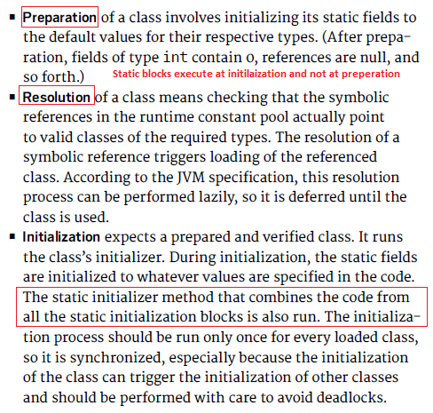
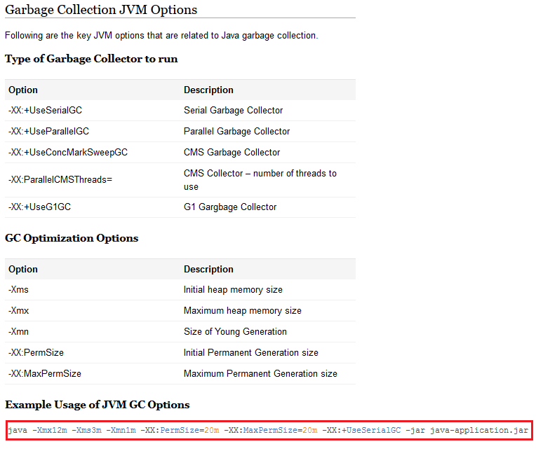
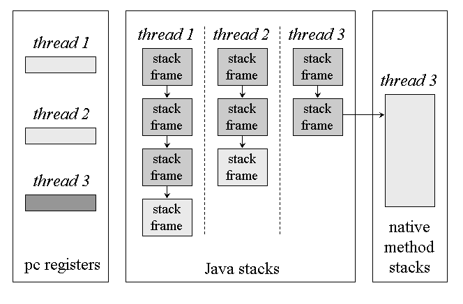
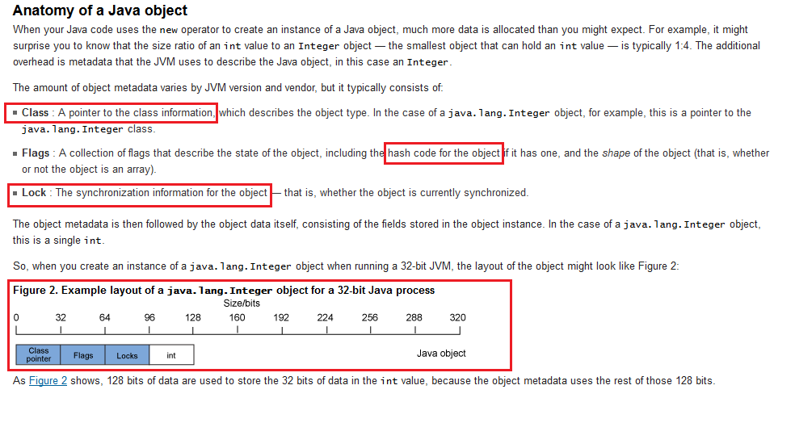

| oracle.com | Oracle HotSpot Virtual Machine Garbage Collection tuning guide |
| jamesbloom.com oracle.com artima.com | JVM internals |
| stackoverflow.com | Different section of JVM [Eden/Serviver/Tenured + PermGen/CodeCache] |
| dzone.com stackoverflow.com github.com github.com |
JIT compiler in JVM
VM option (-XX:+PrintCompilation) will print all JIT optimizations at runtime
VM option (-X) will print all Non-standard JVM options
Output format: {compile_id}{method_attributes} {short_name} ({size} bytes)
|
| java.net java.net | HotSpot JVM Runtime, OpenJDK8 Compiler/JVM source |
| oracle.com artima.com | HotSpot JVM Glossary |
| github.com | HeapStats, a lightweight monitoring tool for Java heap and GC. Winner of JavaOne Duke’s Choice Awards |
| stackoverflow.com |
Method area is a subset of PermGen area
|
| java.net java.net | Compilation guide and source Automatic 'java.lang' package loading (line 521 call to 'importAll' method) |
| github.io github.com |
JIT compiler and CodeCache in brief -Xint) will run JVM in interpreter mode only; No JIT
Example program to see how -Xint can affect performance
|
| stackoverflow.com | JIT compiler dynamic De-Optimization If an optimization did not, improve performance and undo that optimization |
| oracle.com oracle.com | Class Loading in JVM |
| oracle.com stackoverflow.com | Class Linking in JVM: Verification, Preparation, Resolution (VPR) of Symbolic References Symbolic References are used to retrieve the actual object Verification can be turned off by supplying the -noverify option  |
| javainterviewpoint.com artima.com | Class Execution in JVM |
| lse.epita.fr murrayc.com |
Class Format in JVM |
| oracle.com | JDK class disassembler: javap -v -p -s -sysinfo com.test First put your jar in classpath(export CLASSPATH=your-jar.jar) |
| wikipedia.org oracle.com javaworld.com | Java bytecode instruction set |
| javaworld.com stackoverflow.com github.com |
Java bytecode 'invoke' type instructions (VISSD)
|
| stackoverflow.com java.net jvmlangsummit.com | How Lambdas uses invokedynamic (indy) |
| blogspot.in blogspot.in blogspot.in | JVM OutOfMemory Error and thread Dump Analysis using Eclipse MAT |
| stackoverflow.com | How JVM stores static/class references |
| stackoverflow.com | Interned String and Garbage Collection |
| stackoverflow.com openjdk.java.net | Difference of Metaspace and PermGen |
| oracle.com oracle.com stackoverflow.com |
HotSpot VM Options(BGPD):
Standard(-), Non-standard(-X), Developer (-XX)
-XX:+PrintFlagsFinal lists all flags available in VM
|
| javapapers.com fasterj.com stackoverflow.com javacodegeeks.com | Garbage Collection(SPCG):  |
| oracle.com oracle.com | Java G1 Garbage Collector (-XX:+UseG1GC) |
| oracle.com | Concurrent Mark Sweep (-XX:+UseConcMarkSweepGC) |
| oracle.com java.net | JVM Microbenchmarking "About 97% of the time: Premature optimization is the root of all evil" - Donald Knuth |
| securingjava.com stackoverflow.com stackoverflow.com | Class Loader Architecture  |
| stackoverflow.com | Native instruction using JNI |
| superuser.com | CPU x86 registers |
| ascii.cl | Decimal, Hexadecimal, Octal, Binary conversion table |
| stackoverflow.com | Load all associated class info a running class (java -verbose) |
| ibm.com java-success.com villanova.edu stackoverflow.com | How Java objects/primitives stored in memory using visualvm |
| stackoverflow.com stackoverflow.com github.com stackoverflow.com stackoverflow.com | Why 'long' consumes more than 8 bytes in memory: Memory Padding Why 'byte' consumes 4 bytes in memory  |
| stackoverflow.com stackoverflow.com |
Garbage Collection tuning for Interned Strings
Java Compressed Strings VM option (-XX:+UseCompressedStrings) is discarded in JDK7
|
| stackoverflow.com stackoverflow.com github.com | JVM optimization using hoisting by JIT |
| stackoverflow.com blogspot.com | Maximum number of threads per JVM and (-XX:ThreadStackSize) VM option |
| stackoverflow.com | Why does the JVM still not support tail-call optimization |
| dzone.com mishadoff.com github.com | Understanding sun.misc.Unsafe for 'C' like direct memory access in JVM |
| virtualjug.com javaperformancetuning.com | An introduction to JVM performance by Rafael Winterhalter |